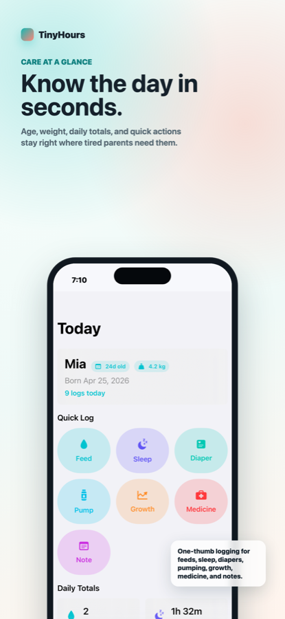
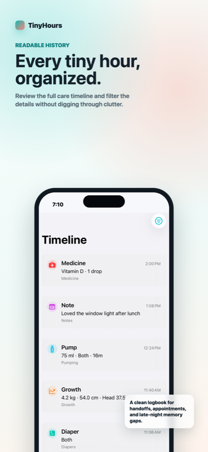
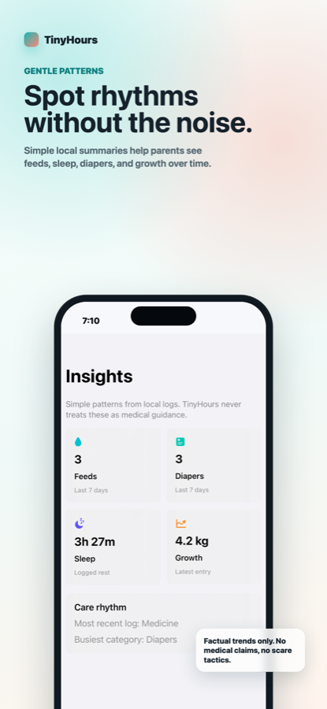
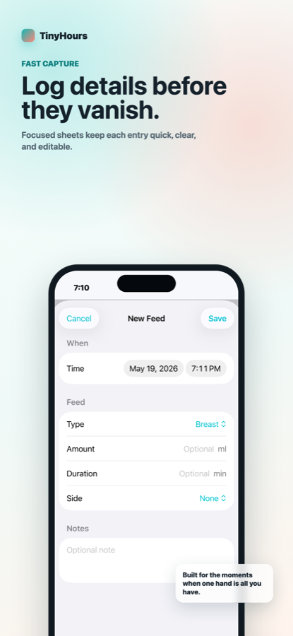
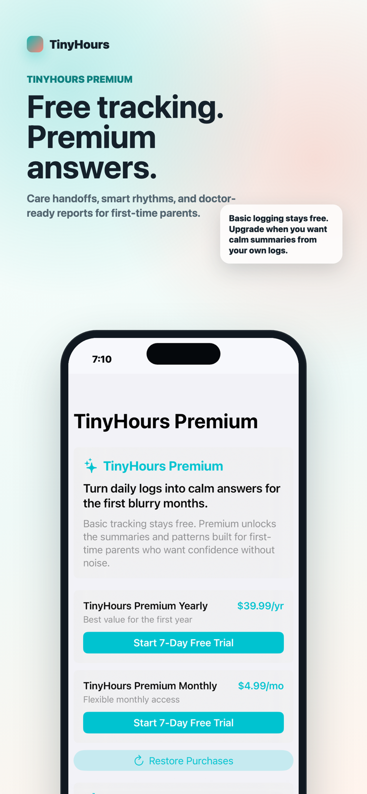

Quick logs
Capture feeds, naps, diapers, pumping, medicine, growth, and notes from one calm Today screen.
Local-first newborn tracker
Calm baby care tracking for feeds, sleep, diapers, pumping, growth, medicine, and the notes parents forget by morning.
Everything in one gentle rhythm
Capture feeds, naps, diapers, pumping, medicine, growth, and notes from one calm Today screen.
Filter what happened by category and edit details without digging through clutter.
Keep age, latest weight, daily totals, and simple trends visible when your brain is busy elsewhere.
Product preview





The innovation lane
TinyHours is heading toward a simple question every exhausted household asks: what changed while I was asleep?
Last feed was 42 minutes ago. Latest diaper was wet. No medicine logged today.
Privacy-first by default
TinyHours is designed for intimate family data. The first release stores baby profiles and care logs locally on the device.
TinyHours Premium
Log feeds, sleep, diapers, pumping, growth, medicine, and notes locally on device.
$0Unlock handoff summaries, smart care rhythm insights, and doctor-ready reports.
From $4.99/moLaunching on iPhone
TestFlight invites will open once the App Store build is ready.